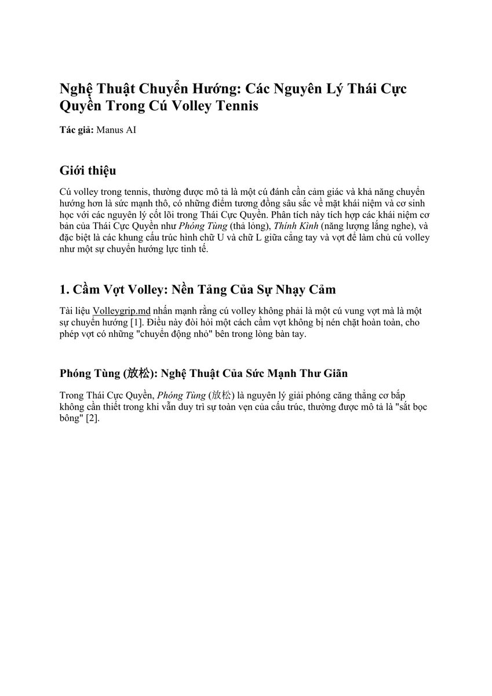
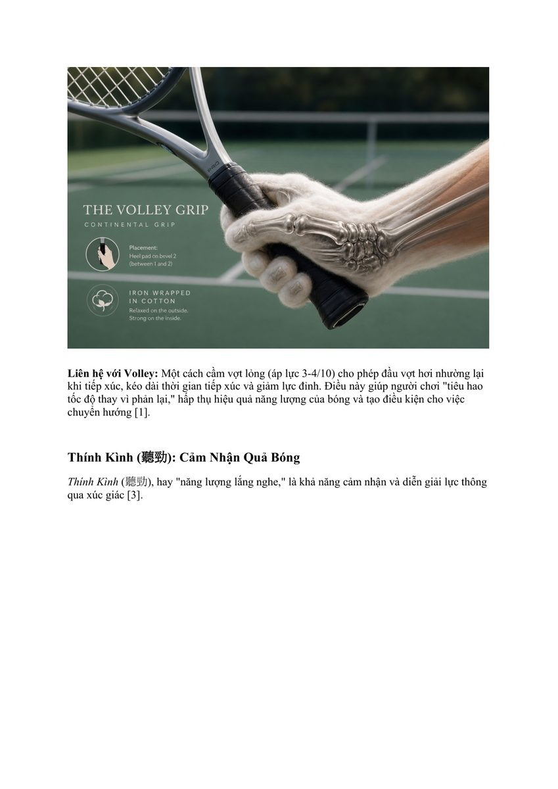

1. Cú Volley Tennis: Nghệ Thuật Chuyển Hướng Thay Vì Đối Kháng Thô Bạo
Trong quần vợt truyền thống, nhiều người chơi tiếp cận cú vô-lê trên lưới bằng một tâm thế đối kháng cơ bắp: cố tình gồng cứng cánh tay và chém mạnh vào quả bóng để tạo lực. Tuy nhiên, ở cự ly gần lưới, khi quả bóng bay tới với tốc độ trên 130 km/h, mọi hành động dùng sức thô thiển đều dẫn đến việc hỏng cú đánh hoặc làm bóng bay văng ra ngoài sân.
Cú vô-lê thực sự là một nghệ thuật chuyển hướng động lượng (redirection of momentum). Điều này phản ánh hoàn hảo triết lý cốt lõi của Thái Cực Quyền: "Tứ lạng bạt thiên cân" (Bốn lạng bạt ngàn cân) — sử dụng một cấu trúc mềm mại nhưng vững chắc để chuyển hướng toàn bộ xung lực bão táp của đối thủ sang một quỹ đạo hiểm hóc khác mà không tiêu tốn sức lực của bản thân.

Hình 1: Triết lý Chuyển Hướng (The Art of Redirection). Cú vô-lê hiện đại không tạo ra xung lực mới từ số không; nó hấp thụ, điều hướng và tái phân phối động năng sẵn có của quả bóng đối phương.2. Nguyên Lý Phóng Tùng (Sung / Deep Relaxation)
Trong Thái Cực Quyền, "Phóng Tùng" (Sung) không phải là sự mềm yếu, buông thõng hay thiếu sức sống. Phóng Tùng là trạng thái giải tỏa toàn bộ sự căng thẳng cơ bắp không cần thiết trong khi vẫn duy trì sự toàn vẹn của khung xương.
Khi áp dụng vào cú vô-lê quần vợt, Phóng Tùng được thể hiện qua áp lực tay cầm vợt:
- Áp lực cầm vợt chỉ từ 3 đến 4 trên thang điểm 10: Cầm vợt quá chặt (8-10/10) sẽ biến cánh tay thành một thanh gỗ cứng đờ, khiến bóng dội ngược ra ngoài như va vào tường đá. Một tay cầm thư giãn cho phép đầu vợt hơi nhường lại một vài milimet khi tiếp xúc, kéo dài thời gian tiếp xúc bóng trên mặt dây (dwell time) và tiêu hao tốc độ dư thừa của đối thủ.
- Hấp thụ chấn động: Cơ thể ở trạng thái Phóng Tùng đóng vai trò như một bộ giảm xóc thủy lực tự nhiên, triệt tiêu xung lực va đập cực mạnh và bảo vệ khuỷu tay khỏi nguy cơ chấn thương.

Hình 2: Phóng Tùng và Thính Kình (Sung & Ting Jin). Khả năng "lắng nghe" và đọc được độ nặng, độ xoáy của bóng thông qua các thụ thể thần kinh xúc giác tại lòng bàn tay.3. Thính Kình (Ting Jin / Listening Energy): Cảm Nhận Trọng Lượng Bóng
Trong môn đẩy tay (Push Hands) của Thái Cực Quyền, "Thính Kình" là kỹ năng dùng da thịt và khớp xương để "lắng nghe" phương hướng, ý đồ và trọng lực của đối phương ngay khi vừa tiếp xúc. Trên lưới tennis, Thính Kình chính là cảm giác bóng siêu việt (touch and feel):
Bí Mật Phân Chia Hai Nhóm Ngón Tay
Bàn tay cầm vợt được chia thành hai phân vùng chức năng độc lập:
- Nhóm ngón Cảm Giác (Sensory Fingers — Ngón Cái & Ngón Trỏ): Giữ lỏng lẻo ở phần trên của cán vợt, đóng vai trò như hai cảm biến sinh học tinh vi. Chúng cung cấp phản hồi xúc giác tức thời về độ xoáy và Điểm tiếp xúc bóng trên mặt dây, cho phép não bộ vi chỉnh góc mặt vợt trong phần nghìn giây.
- Nhóm ngón Cấu Trúc (Structural Fingers — Ngón Út, Áp Út & Giữa): Ôm nhẹ nhàng quanh đáy chuôi vợt (butt cap), đóng vai trò như một chiếc neo giữ cho cây vợt không bị tuột khỏi tay mà không cản trở sự linh hoạt của cổ tay.